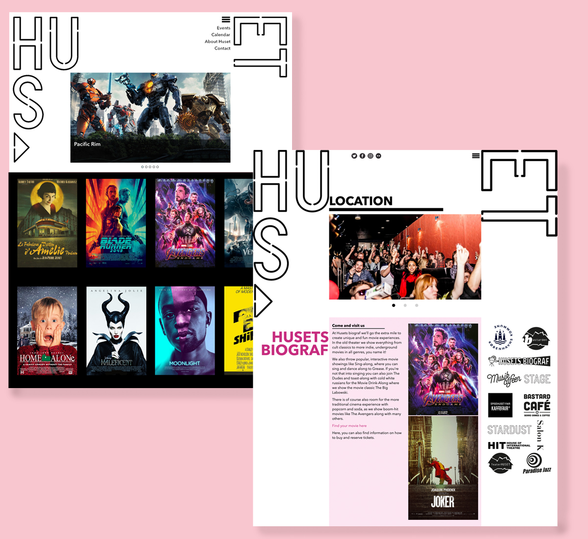
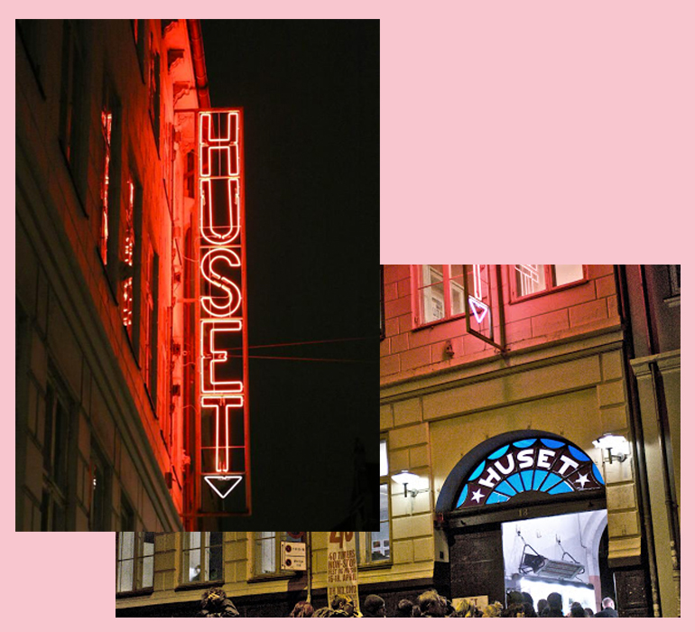
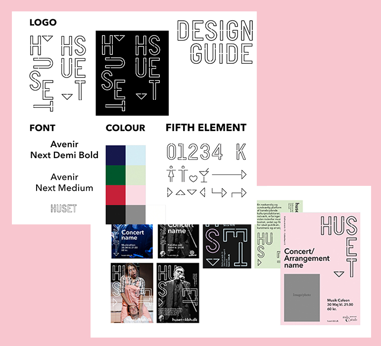
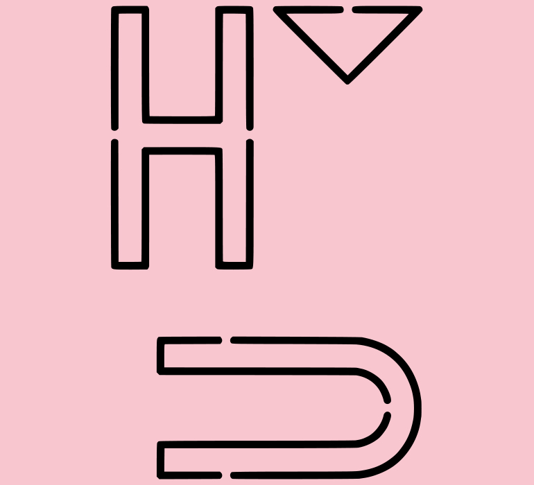
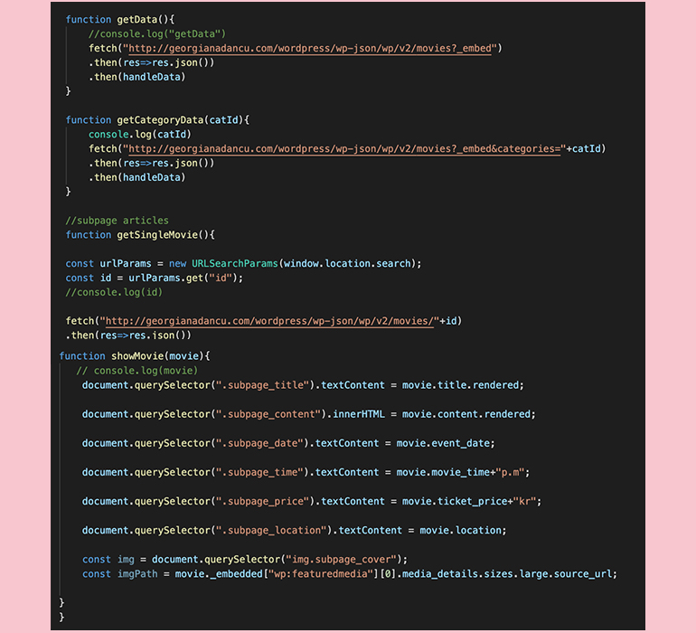

Storyboard

WEEK
14, 15
DESCRIPTION
For this project, my client was Huset-KBH. We were to create a site that focused on one of the main services that Huset offered. My focus was about movies that were provided by Huset, it would contain an up-to-date list of movies, their showtime and a communication hub for the users.
On this project, I used CMS to build a web-app, I worked with json and wordpress api for the first time. It allowed me to fetch data from Wordpress onto my website and made it dynamic.
LINK
http://tiffvoli.com/huset-kbh/
(The API is current down because I need to change host site).
-

The Client
Huset-KBH is a cultural center and they offer a variety of events such as: movies, concert, book cafes, etc. Their goal is to create a place where expats living in Copenhagen can hand out and meet new people. -

Aesthetics | Theme
I had to use the same aesthetics as Huset, they provided us with a design guide with fonts, layout and colour scheme therefore I followed the guildlines to design my website. -

Favicons
I also used favicons for the first time in this project, the favicons represented the Huset image and make the website more recognisable. -

Json & API
I created a Wordpress API that included all the movies and their information using Pods. After that, I fetched the data into my website using Json.